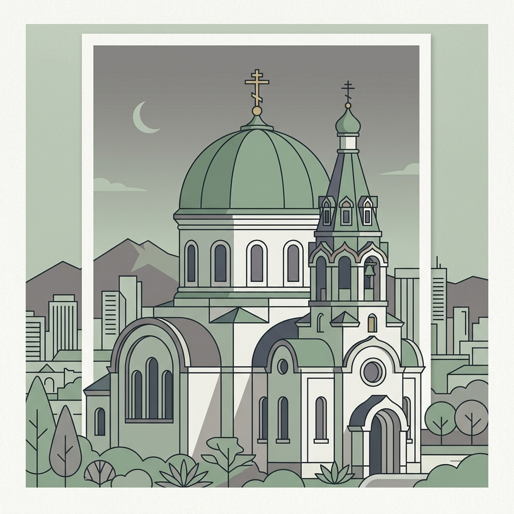
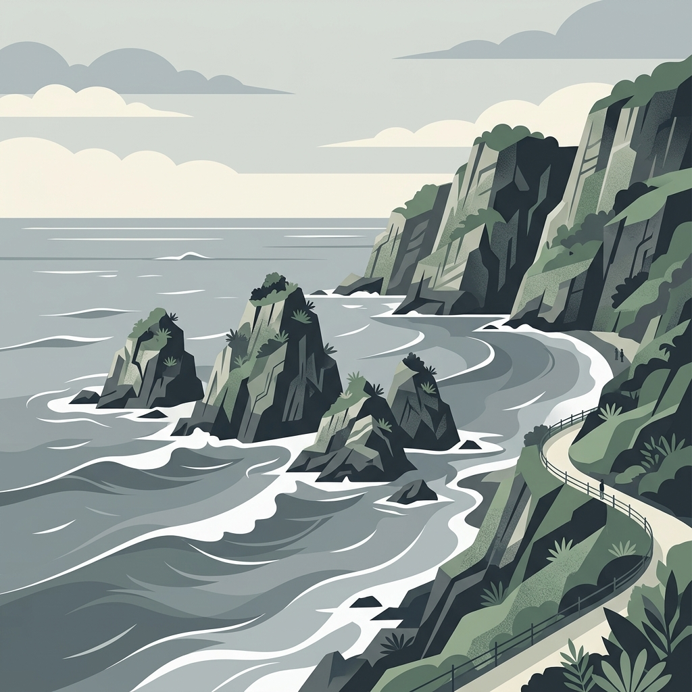
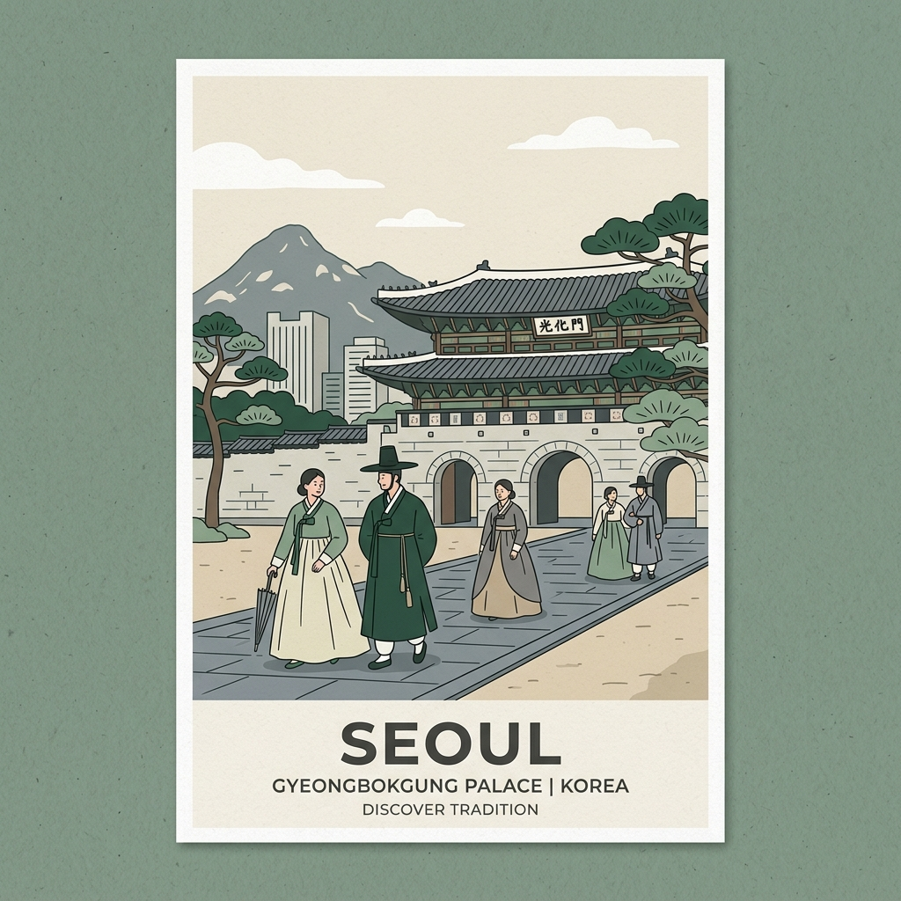

A family guide & Suggested Day-by-Day Agenda for the first-time visit to Seoul, Busan, and back. Tailored for a relaxed, memorable pace.
Stay: June 27 – July 3 (6 Nights) | Vibe: Local, residential, quiet, and highly strategic.

Ahyeon-dong is built on rolling hills (the name itself translates to "small hill"). During the Joseon Dynasty, it served as an important pass outside the city walls. In the 20th century, it became a dense residential area, and today it remains one of the few places in Seoul where you can see traditional alleyway layouts alongside modern high-rises. It's a peaceful, authentic base away from tourist crowds.
Ahyeon Market: Open since 1930, this traditional street market is the heart of the neighborhood. It is famous for local delicacies like *jokbal* (braised pigs' trotters), *jeon* (savory pancakes), and daily fresh goods.
A world-famous, cozy neighborhood spot for *ganjang gejang* (soy-sauce marinated raw crab). Famed for fresh crab overflowing with rich roe, served in a savory, non-fishy marinade. Famed as a classic "rice thief" (*bap-doduk*). Set meals are approximately ₩14,000–₩15,000 for the medium stone crab (*dolge*) and ₩31,000 for the premium large flower crab (*kkotge*). Very foreigner-friendly with welcoming staff who speak English and gladly show you how to eat the crab. Click name for their Instagram menu & details.
Open in Naver MapsLocated in Gongdeok (next subway station from Ahyeon). A historic, decades-old legendary Korean BBQ restaurant. Extremely family-friendly, spacious, and open daily from 11:00 AM to 11:00 PM. Famed marinated pork ribs (*galbi*), salt-grilled pork (*sogeumgui*), and skirt/seagull meat (*galmaegisal*) are around ₩18,000 per portion (200g–250g). High value-for-money. *Tip:* Order marinated ribs first, then salt-grilled, and finish with chewy pig skin (*k껍데기*).
Ahyeon is adjacent to Ewha Womans University and Sinchon, both historical student fashion hotspots. Some of Mapo's best thrift shopping is right here:
Stay: July 3 – July 6 (3 Nights, 2 rooms — confirmed) | Hotel: Bonathree Hotel (152-1, Yongho-ro) | Check-in from 4 PM, check-out by 12 PM | Vibe: Coastal cliffs, harbor views, and sea breezes.

Busan, South Korea's secondary metropolis, is defined by its dramatic relationship with the sea. The Nam-gu district acts as a natural marine gateway, shaped by rugged volcanic cliff systems and the iconic Oryukdo Islets. Historically a vital harbor defense post, Nam-gu has transitioned into a cultural and scenic hub, home to the peaceful UN Memorial Cemetery and spectacular coastal walking routes.
Located directly on the sands of Haeundae Beach, this is South Korea's premier aquarium. Extremely popular for families with mixed ages. Click the title to see current marine conservation exhibits and show times.
Located in Daeyeon-dong, Nam-gu. Open daily 09:00 AM to 11:00 PM. Famed for serving rich pork bone broth loaded with tender pork slices. Incredibly budget-friendly (around ₩9,000–₩11,000 per bowl). *Reddit tip:* Order the *dwaeji gukbap baekban* (set meal) to get a plate of tender *suyuk* (boiled pork slices) served separately over a small burner to keep it warm, plus soup and rice for just a small extra cost.
More than a meal, it's a bakery for fish cakes (*amook*). Take a tray and tongs, and pick from freshly fried fish cakes stuffed with cheese, shrimp, peppers, or sweet potato. Fun and interactive for kids! Check their website for historical factory details.
Located right in Nam-gu. Open daily 10:30 AM to 08:30 PM. Serving refreshing *milmyeon* (wheat noodles in icy herbal beef broth or sweet-spicy paste) for ~₩8,000–₩9,000. Pair water milmyeon (*mul-milmyeon*) or dry spicy (*bibim-milmyeon*) with their giant steamed dumplings (*wang-mandu*) for a classic family lunch.
Busan's vintage shopping is legendary. Head to the **Gukje Market Vintage Alley** in Nampo-dong. Here, you'll find alleyways of vendors selling secondhand clothing piled high on tables (you dig for treasures, often 2,000–5,000 KRW!). For curated vintage, visit stores like **Goyu Vintage** and **Cut-a-dash** along Gwangbok-ro.
A wire manufacturing factory operating from 1963 to 2008, beautifully transformed into an eco-friendly cultural oasis. Home to art galleries, a massive Yes24 secondhand bookstore, botanical gardens, and the famous Terarosa Cafe. Outstanding for family walks.
Located on Eulsukdo Island, this museum is famous for its vertical garden exterior and family-friendly digital art, media installations, and playgrounds focusing on ecological and environmental art.
Stay: July 6 – July 9 (3 Nights — confirmed) | Base: 3BR apartment, 3FL, 96 Bugahyeon-ro, Seodaemun-gu (one stop from Ahyeon, next to Ewha — familiar turf!) | Vibe: Royal palaces, traditional culture, and high-energy shopping.

Built in 1395, Gyeongbokgung ("Palace Greatly Blessed by Heaven") was the main royal palace of the Joseon Dynasty. Famed for its grand pavilions, expansive grounds, and the colorful **Changing of the Royal Guard Ceremony** held daily at the Gwanghwamun Gate (10:00 AM & 2:00 PM, closed Tuesdays). Learn more at the Palace Administration Page.
Family Tip: Visit the **Children's Folk Museum** inside the palace grounds for fun, interactive hands-on heritage workshops!
A Michelin Bib Gourmand landmark in Myeongdong. Open daily 10:30 AM to 09:30 PM. Known for its rich, garlic-heavy chicken *kalguksu* (hand-cut noodle soup) and incredibly juicy pork *mandu* (dumplings) for ~₩10,000–₩11,000 per dish. Service is blazing fast. *Tip:* Extra noodle and rice refills are free with a main order, and the garlic-heavy kimchi served here is legendary (but very spicy!).
Located near Gyeongbokgung. Famous for serving rich ginseng chicken soup (*samgyetang*) inside a traditional, spacious Hanok building. A perfect, healthy, and warm mid-range family meal.
A unique market where you buy traditional brass coins (*yeopjeon*) to trade with various food stalls to build your own lunchbox (*dosirak*). Fun, interactive, and budget-friendly!
The famous Starfield Library (별마당도서관) sits in the heart of COEX Mall in Gangnam — a soaring two-story atrium with 13-meter bookshelves, ~70,000 books, and 600 magazines under a glass ceiling. It's completely free, no reservation needed, and open daily 10:30 AM – 10:00 PM. One of Seoul's most photographed interiors. Details at the Official Seoul Guide.
⚠️ Reddit Community Warning: Extremely tourist-saturated and frequently flagged for price gouging, unhygienic practices, and pushy vendors. Stalls in the middle of the street often give larger portions than ordered to demand higher prices. *Tips:* Calculate your bill before eating, pay with card where possible, and avoid street vendors in the central aisles. Consider visiting much more local, authentic alternatives like Mangwon Market or Gyeongdong Market for a better experience.
Practical travel hacks to keep your family comfortable, connected, and budget-smart.
Korea runs on 220V with Type C / F round-pin plugs (same as continental Europe). Get these sorted at home — they're annoying to hunt down on day one:
Korea is the global capital of skincare. Here is where to shop for brands like Innisfree, Laneige, Beauty of Joseon, COSRX, and Sulwhasoo:
High-speed rail is the best way to travel between Seoul and Busan (~2h 15m). Book directly on the official Let's Korail website.
✓ Tickets booked! KTX103 Seoul → Busan, Friday July 3, 13:08 → 16:28 (₩50,800 pp) and KTX124 Busan → Seoul, Monday July 6, 13:17 → 16:34 (₩46,400 pp). Keep the QR tickets on your phones plus one printed set.
Every traveler needs their own card. You can purchase them at any convenience store (CU, GS25, 7-Eleven).
Child Discount Registration: Show the child's passport to the cashier at the time of purchase and ask to register the card as a "Child" (ages 6–12) or "Youth" (ages 13–18). This applies discounted transit fares instantly. Visit the Official T-Money Guide for transit rules.
Note: T-money cards must be loaded with CASH (Korean Won) at station ticketing machines or convenience stores. They cannot be loaded using credit cards.
Late June and early July is South Korea's **monsoon season (*Jangma*)**.
| Number | Service | When to Call |
|---|---|---|
| 119 | Ambulance & Fire | Medical emergencies, accidents, or fires (24/7, translation available) |
| 112 | Police | Reporting theft, safety issues, or security concerns |
| 1330 | Korea Travel Helpline | General tourist advice, language translation, complaints (24/7, English) |
| 1339 | Medical Advice Helpline | Non-emergency health concerns or finding English-speaking clinics |
| English | Korean | Pronunciation |
|---|---|---|
| Hello / Good morning | 안녕하세요 | An-nyeong-ha-se-yo |
| Thank you | 감사합니다 | Gam-sa-ham-ni-da |
| I'm sorry / Excuse me | 죄송합니다 | Joe-song-ham-ni-da |
| Where is the bathroom? | 화장실이 어디예요? | Hwa-jang-sil-i eo-di-ye-yo? |
| How much is this? | 얼마예요? | Eol-ma-ye-yo? |
| This one, please (ordering) | 이거 주세요 | I-geo ju-se-yo |
| It's delicious! | 맛있어요! | Ma-si-seo-yo! |
| Please make it not spicy | 안 맵게 해주세요 | An maep-ge hae-ju-se-yo |
A balanced, family-friendly agenda covering key attractions, culinary highlights, and relaxation. Click on any day to see details.
ET672 lands at Incheon 4:00 PM. Get your bags, purchase T-money transit cards, and board the AREX express train to Gongdeok, arriving at your Ahyeon apartment to check in by 7:00 PM.
Dine at Jangsu Hanbang Samgyetang (장수한방삼계탕) near Mapo Station — 5 minutes from the accommodation. Savor slow-braised ginseng chicken soup stuffed with glutinous rice, jujube dates, and garlic. ₩10,000–20,000 pp (≈ R108–216). The ultimate warm, restorative first meal.
Walk to the Namsan Cable Car and ride up to the iconic N Seoul Tower. Enjoy breathtaking 360° night views over the glowing Seoul skyline. Take the cable car down and take a taxi back to your apartment by 10:00 PM.
Subway to Hongik University Station. Start with British scones and coffee in a charming red-brick house in Yeonnam-dong, then take a stroll through Gyeongui Line Forest Park.
Explore Hongdae's vintage fashion strip including the massive underground Vintage Santa, and browse art supplies at Homi Art Shop (a local landmark since 1975).
Enjoy a rich, creamy bowl of Tori Paitan chicken ramen in Hongdae. Free noodle refills are available if you ask for "myeon chuga."
Experience multi-floor virtual reality gaming in Hongdae, followed by campfire relaxation and marshmallow roasting at the beautiful traditional hanok café Sin Lee Doga.
Walk the Hongdae pedestrian street to watch local street performers and capture a classic 4-cut photobooth strip with the family.
Subway Line 6 to World Cup Stadium. Ride the shuttle to the top of Haneul Park for breathtaking 360° sunset views over the Han River and city skyline surrounded by pampas grass fields.
Subway to Gongdeok for dinner at a legendary multi-generational BBQ institution. Dine on charcoal-grilled marinated pork ribs (*galbi*) and salt-grilled pork (*sogeumgui*).
Finish the night with traditional shaved milk bingsu dessert at Sulbing Mapo Gongdeok before a 10-minute walk back to your Ahyeon apartment by 10:45 PM.
Start your morning in a beautiful restored hanok courtyard, enjoying specialty coffee and fresh pastries (like their signature pandoro).
Rent traditional Joseon-era clothing (gives you free palace admission!) and watch the Royal Guard Changing Ceremony at the main gate at 10:00 AM, followed by a tour of the palace pavilions.
Head to Seoul's most famous ginseng chicken soup restaurant housed in a rambling 100-year-old traditional hanok compound. Bubbling herbal chicken broth stuffed with glutinous rice.
Browse traditional crafts at Ssamziegil Courtyard in Insadong, then stroll through the winding commercial alleys of Ikseon-dong. Rest your legs with tea at Cheongsudang Cafe's beautiful bamboo garden courtyard.
Explore Korea's oldest market for three legendary targets: crispy bindaetteok (mung bean pancakes), mayak gimbap (mini rice rolls), and hand-cut kalguksu noodles.
Take Subway Line 2 back west to browse the lively university fashion boutiques, hair accessory shops, and cosmetics stores right next to your Ahyeon apartment.
Take Subway Line 2 to Seongsu. Grab a specialty espresso at PYMT Coffee, wood-fired bagels at Kokkili Bagel, and fresh cruffins or cronuts at the factory-converted OUDE Bakery Café.
Dine on premium raw beef bibimbap topped with fresh, crispy minari (water parsley) at this popular local Seongsu spot.
Explore Seongsu's industrial lanes. Check out the select street brands at EQL Grove, minimalist bags at Standoil, curated vintage at Balbal Vintage, and silver jewelry boutiques.
Visit the architecturally stunning flagship store of Anderson Bell + ATN, Korea's globally renowned avant-garde design label.
Visit the atmospheric Rain Report cafe (featuring a rain-show courtyard) for a sesame cloud latte, followed by cinematic high-angle cuts at the DON'T LXXK UP photo booth.
Grab hot, buttery salted rolls at Jaeyondo Salt Bread, then sit back to relax and listen to high-end audio at the Sounds of Apple vinyl-listening café.
Savor a celebratory dinner of egg-battered beef slices cooked on a sizzling tabletop cast-iron pan, before taking Subway Line 2 back to your Ahyeon apartment by 11:00 PM.
Start your morning with clean specialty espresso at GML Coffee, then take a relaxing walk along the green linear paths of Yeonnam-dong Forest Park.
Visit the charming, atmospheric Kiki's Delivery Service–themed café in Yeonnam-dong for aesthetic pastries and Ghibli merchandise.
Take Subway Line 2 directly to Myeongdong. Head straight to the multi-floor Olive Young Flagship store for a K-beauty haul, then explore the surrounding clothing and skincare boutiques.
Grab a buttery griddle egg sandwich at Egg Drop, and follow it up with peppery, spicy rice cakes at Sinjeon Tteokbokki. Spaced out by 1.5 hours so you can properly enjoy both.
Dine at the legendary Michelin Bib Gourmand institution for chicken kalguksu (knife noodles) and juicy mandu. Finish with a late-night dessert run to CHIZN Bingsu Bar.
Stroll through the beautifully lit traditional halls and unique Western-style architecture of Deoksugung Palace. Walk the romantic stonewall path outside before taking a direct 6-minute train ride back to Ahyeon.
Attend the pre-booked English tour of the royal private garden. Walk through historical wooden pavilions, bridges, and stone ponds in a quiet, secluded forest setting.
Take Subway Line 3 directly to Apgujeong (Gangnam) for a late brunch in Parc Seoul's plant-filled greenhouse dining room. Follow with fresh cream-filled donuts at Café Knotted.
Browse kinetic installations at Haus Nowhere, then stroll the Dosan Park streets to shop top Korean streetwear and designer labels (Ader Error, Instantfunk, etc.).
Take a 12-minute taxi directly to Banpo Hangang Park. Order fried chicken delivery (Chimaek) straight to the delivery zone and relax on the grass by the river.
Watch the spectacular Banpo Bridge Rainbow Fountain Show (colored lights arcing water from the bridge) directly from your picnic spot. Head back to Ahyeon Station on the subway or by taxi.
Checkout from Ahyeon and head to Samgakji Station for Mongtan's famous straw-fire aged ribs. (Ensure 11:30 AM CatchTable booking or standby queue entry to make the train!).
Departs Seoul Station at 1:08 PM, arriving at Busan Station at 4:28 PM. Enjoy views of the Korean countryside from your high-speed train seat.
Deposit your suitcases in Busan Station lockers. (This lets you explore bag-free and avoids a 1-hour double-back trip to the hotel, ensuring you beat the monorail's 6:00 PM closing time). Walk to Choryang Ibagu-gil and ride the free hillside monorail to the top for views over Busan Port.
Stroll down to grab pastries at Busan's oldest bakery, then sit down for a classic dinner of pork bone rice soup (Dwaeji Gukbap) at Bonjeon right by the station.
Retrieve your bags from the station lockers and take a short 15-minute taxi (or 35-minute subway) to Daeyeon-dong to check in to the Bonathree Hotel. Evening at leisure.
Take an early taxi (~30 mins) to this spectacular Buddhist temple built directly on coastal cliffs. Arrive early to enjoy the temple in peace before the crowds arrive.
Walk next door to the Skyline Luge (opens at 9:00 AM on weekends). Zip down the winding gravity-powered kart tracks for 2 fast rides before queues build up.
Board the iconic, slow-moving glass capsule at Mipo for a 30-minute scenic ride to Cheongsapo, offering beautiful, elevated views of the coastline.
Stroll 40 minutes back to Mipo along the scenic coastal Green Railway trail, then walk over to Haeundae Traditional Market.
Enjoy noodle stalls and street eats (like seed hotteok or spicy tteokbokki) for a classic market lunch.
Grab delicious custard cream puffs and sweet pastries at this famous Haeundae bakery, then walk along the promenade to LCT Tower.
Visit the 100th-floor observatory in the LCT Tower at Haeundae Beach for breathtaking, panoramic views of the city and the ocean.
Take a 30-minute taxi crossing the Gwangan Bridge directly to Oryukdo Skywalk. Walk over the glass bridge jutting out over the ocean cliffs (closes at 6:00 PM).
Take a quick taxi to Gwangalli and enjoy a premium dinner of stone pot rice topped with abalone or snow crab at Handasot.
Stroll onto Gwangalli Beach and find a spot on the sand to watch the spectacular, synchronized drone light show over the ocean (Saturday nights only!). Return to the hotel by subway (3 stops).
Explore the vibrant, terraced houses of Busan's famous art village. Find the Little Prince statue and capture photos of the colored roofs. View recent pictures at Gamcheon.
Take a 15-minute taxi to Yeongdo Island. Stroll through the white-washed cliffside alleys of Huinnyeoul, walk the coastal path and tunnel, and stop for lunch with front-row sea views.
Walk or take a short taxi to Momos Coffee on Yeongdo's harbor. Experience world-class pour-over coffee by 2019 World Barista Champion Jooyeon Jeon at this harborside coffee hub.
Cross the bridge to Nampo-dong. Walk through the giant tanks of Jagalchi Fish Market, then head over to Gukje Market to browse post-war market stalls and vintage shopping alleys.
Eat a classic Busan dinner of chilled wheat noodles (*milmyeon*) and giant steamed dumplings, followed by a sweet seed hotteok (pancake) at BIFF Square for dessert.
Subway to Seomyeon/Jeonpo. Walk through the trendy cafes and boutiques, then end the night with a traditional shaved milk bingsu nightcap at Sulbing.
Walk to the UN Memorial Cemetery next to your hotel. Stroll through the moving, beautifully landscaped gardens and memorial grounds honoring fallen soldiers from the Korean War.
Check out and take a 15-minute taxi to Busan Station. Have a comfortable sit-down lunch at one of the station's restaurants or pick up a gourmet rail lunchbox (*dosirak*) for the train.
Departs Busan Station at 1:17 PM, arriving in Seoul Station at 4:34 PM. Subway to Seodaemun and check into the Bugahyeon-ro apartment (Seoul Phase 2).
Subway to Euljiro 4-ga for a steaming, restorative bowl of premium beef head bone soup (*somori gukbap*) at a popular local spot.
Walk to the futuristic Dongdaemun Design Plaza (designed by Zaha Hadid) and take a peaceful evening walk along the illuminated banks of the Cheonggyecheon Stream.
Browse the wholesale and retail fashion towers of Dongdaemun. The markets are open late into the night, filled with cheap clothes, cosmetics, and accessories. Subway back to the apartment.
Take the subway and local bus to this quiet, modern hanok village nestled under the scenic granite peaks of Bukhansan Mountain. Very peaceful and photogenic in the morning.
Take Subway Line 3 to Jongno for lunch at Seoul's oldest active restaurant, established in 1904. Savor their famous, nourishing ox-bone soup (*seolnongtang*).
Walk to Namdaemun Market, Korea's oldest and largest traditional market. Shop for local souvenirs like metal chopsticks, ginseng, traditional snacks, and accessories.
Transit to Yongsan Station. Experience a premium movie screening in 4DX (vibrating seats, wind, scent effects) or ScreenX (270-degree wrap-around screen) at this flagship theater complex.
Cross the river to Jamsil Stadium. Arrive early to buy tickets, stock up on famous stadium fried chicken (*chimaek*) and beer, and find your seats. The game starts at 18:30. Experience the incredible, high-energy synchronized cheers and fan songs!
Take the subway to Ichon Station. Visit the National Museum of Korea, focusing on the Room of Quiet Contemplation to see the two national treasure pensive Bodhisattva statues.
Transit to Hannam-dong and visit the Leeum Museum of Art, featuring an extraordinary collection of traditional Korean ceramics (Goryeo celadon) alongside modern works (Rothko, Hirst).
Take a taxi crossing the Han River to Bongeunsa Temple in Gangnam. Stroll the peaceful 1,200-year-old temple grounds and see the 23-meter standing stone Buddha.
Walk across the street into the COEX Mall. Experience the towering 13-meter book atrium of the Starfield Library, browse local shops, and snap photos of the Gangnam Style statue at the East Gate.
Take a short taxi to Apgujeong for a proper farewell K-BBQ feast at Samwon Garden. Dine on their famous, tender Hanwoo beef ribs in a gorgeous courtyard with waterfalls.
Take a taxi back to your Seodaemun apartment to retrieve your bags. Board the AREX train or take a taxi to Incheon Airport Terminal 2, arriving around 20:45 (3.5 hours before flight ET673 departs at 00:20).
The flight home leaves just after midnight: be at ICN by ~9:30 PM on Wednesday July 8. Connection in Addis Ababa (ET845), landing Cape Town 1:00 PM Thursday.